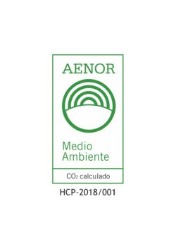
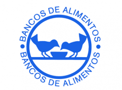

SE COMPROMETE CON NUESTRA SOCIEDAD
Plátano de Canarias lo conforman miles de pequeños agricultores que participan del compromiso social
de ASPROCAN, organización que representa a todas las organizaciones de productores
de plátanos de Canarias y desde la cual nos comprometemos a:
1
OFRECER LA MEJOR FRUTA
Plátanos de Canarias nutritivos, sabrosos, seguros y de calidad.
2
CUIDAR EL MEDIO AMBIENTE
Difundir y promover prácticas de producción responsables, que cuiden tanto de los recursos naturales
como de la salud de las personas aplicando prácticas de producción eficientes, gestionando
adecuadamente los residuos
que se generan y reduciendo las emisiones de gases de efecto invernadero. En este sentido, nuestro
compromiso es
público y tiene como garantía la certificación AENOR de la huella de carbono, que pone de manifiesto
la reducida
incidencia de los gases de efecto invernadero asociados a su ciclo de vida.

3
AGRADECER LA CONFIANZA
Agradecer a la sociedad su confianza en nuestro producto contribuyendo con entidades benéficas
reconocidas por su
labor hacia los más desfavorecidos.

4
PROMOVER LA VIDA SALUDABLE
Fomentando los buenos hábitos alimentarios y la práctica de actividades deportivas.
5
DIFUNDIR LOS VALORES
Difundir los valores socioeconómicos propios de los productos provenientes de las Regiones
Ultraperiféricas de Europa.